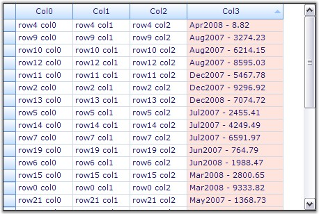
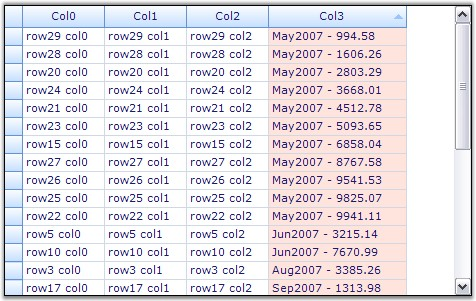

Custom Sorting allows you to implement custom sorting logic when the standard sorting techniques do not meet your needs. To support custom sorting in Grid Grouping control, the user needs to add an IComparer object and handle one event.
The Comparer object allows you to control how the sorting is done on the column. This is the place where you can define your own sorting logic. After customizing the sorting logic through IComparer, you can make the grouping grid use this special IComparer by handling an event.
Example
Consider a scenario where one of the data columns of your datasource consists of Date-Numeric combination values. In this case, the default sorting will not produce the results we desire. The sorting has to be done first on date values and then on numeric values. Hence we need to write a custom sorting logic by defining a special IComparer object. The grouping grid could then be made to use this custom comparer by handling an event that gets fired while sorting the columns.
The example illustrates this process in a step by step manner.
1. Setup a datasource and bind it to a grid grouping control.
|
[C#]
// Create a Data Source. DataTable dt = new DataTable("MyTable"); int nCols = 4; int nRows = 30; for (int i = 0; i < nCols; i++) dt.Columns.Add(new DataColumn(string.Format("Col{0}", i))); Random r = new Random(); for (int i = 0; i < nRows; ++i) { DataRow dr = dt.NewRow(); for (int j = 0; j < nCols; j++) dr[j] = string.Format("row{0} col{1}", i, j); DateTime d = DateTime.Now.AddDays(r.Next(i < 20 ? 700 : 1)); dr[nCols - 1] = string.Format("{0:MMM}{1:00} - {2:0.00}", d, d.Year, r.Next(1000000) / 100d); dt.Rows.Add(dr); }
// Bind the data source to the grouping grid. this.gridGroupingControl1.DataSource = new DataView(dt); |
|
[VB.NET]
' Create a Data Source. Dim dt As DataTable = New DataTable("MyTable")
Dim nCols As Integer = 4 Dim nRows As Integer = 30
Dim i As Integer = 0 Do While i < nCols dt.Columns.Add(New DataColumn(String.Format("Col{0}", i))) i += 1 Loop
Dim r As Random = New Random() i = 0 Do While i < nRows Dim dr As DataRow = dt.NewRow() Dim j As Integer = 0 Do While j < nCols dr(j) = String.Format("row{0} col{1}", i, j) j += 1 Loop Dim d As DateTime = DateTime.Now.AddDays(r.Next(IIf(i < 20, 700, 1))) dr(nCols - 1) = String.Format("{0:MMM}{1:00} - {2:0.00}", d, d.Year, r.Next(1000000) / 100.0R) dt.Rows.Add(dr) i += 1 Loop
' Bind the data source to the grouping grid. Me.gridGroupingControl1.DataSource = New DataView(dt) |
2. Define a Custom Comparer by implementing the IComparer interface.
|
[C#]
// Sorts first on date and then on value. public class DateComparer : IComparer { // IComparer Members. public int Compare(object x, object y) { if (x == null && y == null) return 0; else if (x == null) return -1; else if (y == null) return 1; else { DateTime xdate = Convert.ToDateTime(x.ToString()); DateTime ydate = Convert.ToDateTime(y.ToString()); int c = xdate.CompareTo(ydate); return c; } } } |
|
[VB.NET]
' Sorts first on date and then on value. Public Class DateComparer : Implements IComparer
' IComparer Members. Public Function Compare(ByVal x As Object, ByVal y As Object) As Integer Implements IComparer.Compare If x Is Nothing AndAlso y Is Nothing Then Return 0 Else If x Is Nothing Then Return -1 Else If y Is Nothing Then Return 1 Else Dim c As Integer = GetDate(x.ToString()).CompareTo(GetDate(y.ToString())) If c = 0 Then c = GetDouble(x.ToString()).CompareTo(GetDouble(y.ToString())) End If Return c End If End Function
Private Function GetDate(ByVal s As String) As DateTime Dim dt As DateTime = DateTime.MinValue Dim pos As Integer = s.IndexOf("-"c) If pos > -1 Then DateTime.TryParse(s.Substring(0, pos), dt) End If Return dt End Function
Private Function GetDouble(ByVal s As String) As Double Dim d As Double = Double.NaN Dim pos As Integer = s.IndexOf("-"c) If pos > -1 Then Double.TryParse(s.Substring(pos + 1), d) End If Return d End Function End Class |
3. Handle the SortColumnsChanging event to make the grid use the custom comparer.
|
[C#]
private string specialDateColName = "Col3"; private DateComparer specialDateComparer = new DateComparer();
// Set up support for custom sort on Grid Grouping control. this.gridGroupingControl1.TableDescriptor.SortedColumns.Changing += new ListPropertyChangedEventHandler(SortedColumns_Changing);
// Make the Grid Grouping control use the special IComparer. void SortedColumns_Changing(object sender, ListPropertyChangedEventArgs e) { SortColumnDescriptor scd = e.Item as SortColumnDescriptor; if (e.Action == ListPropertyChangedType.Add && scd != null && scd.Name == specialDateColName) { ((SortColumnDescriptor)e.Item).Comparer = specialDateComparer; } } |
|
[VB.NET]
Private specialDateColName As String = "Col3" Private specialDateComparer As DateComparer = New DateComparer()
' Set up support for custom sort on Grid Grouping control. AddHandler gridGroupingControl1.TableDescriptor.SortedColumns.Changing, AddressOf SortedColumns_Changing
' Make the Grid Grouping control use the special IComparer. Private Sub SortedColumns_Changing(ByVal sender As Object, ByVal e As ListPropertyChangedEventArgs) Dim scd As SortColumnDescriptor = CType(IIf(TypeOf e.Item Is SortColumnDescriptor, e.Item, Nothing), SortColumnDescriptor) If e.Action = ListPropertyChangedType.Add AndAlso Not scd Is Nothing AndAlso scd.Name = specialDateColName Then CType(e.Item, SortColumnDescriptor).Comparer = specialDateComparer End If End Sub |
4. When you run the sample, click on Col3 to sort it. You will see the effect of the custom sorting logic. The screen shots given below shows the sorted grid with/without Custom Comparer.

Figure 410: Sorted Grid without Custom Comparer

Figure 411: Sorted Grid with Custom Comparer